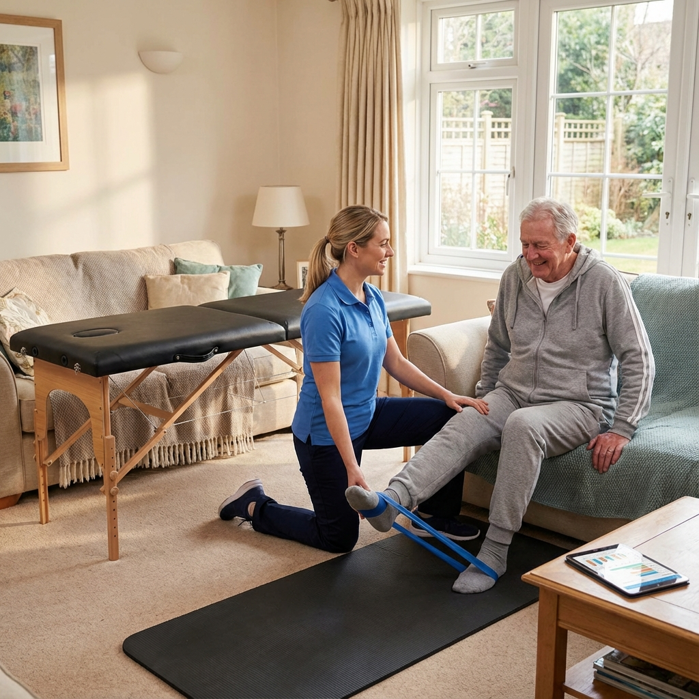

Sports injury assessment
A 45-minute assessment for activity-related injuries, with a plan designed around recovery and a safe return to movement.
Book sports assessmentLooking for physiotherapy near Carstairs? Can-Am Physical Therapy & Rehab provides one-on-one orthopedic, sports injury and post-surgical care at our nearby Crossfield clinic. Eligible Carstairs residents can also request treatment at home.
Pain or injury can affect work, sleep, exercise and the ordinary movements that make up your day. Your appointment starts with a focused assessment of your symptoms, movement and functional goals, so your plan fits you.
Our physiotherapists provide individualized, hands-on treatment supported by exercise and practical guidance. Your plan may include manual therapy, mobility work, strengthening and progressive return-to-activity exercises based on your assessment.
Carstairs patients can book a standard 45-minute initial assessment and treatment, or a 60-minute assessment when two body areas need to be evaluated.

If travelling to Crossfield is difficult, Can-Am offers orthopedic home-care appointments for eligible Carstairs addresses within the clinic's 10–20 km service range. A home evaluation gives your physiotherapist time to understand your movement, environment and recovery goals where you use them every day.
Exact distance and appointment availability are confirmed during booking. If you are unsure whether your address is within range, call the clinic before scheduling.
Choose the appointment that best matches your situation. If you are uncertain, contact the clinic before booking.
A 45-minute assessment for activity-related injuries, with a plan designed around recovery and a safe return to movement.
Book sports assessmentDedicated MVA initial assessment and treatment appointments are available for eligible accident-related injuries.
Book MVA assessmentAssessment and treatment options are available for eligible workplace injuries, including vestibular assessment when appropriate.
Book WCB assessmentBook an initial clinic assessment, sports injury assessment, MVA/WCB assessment or eligible home-care evaluation through JaneApp.
Your physiotherapist will discuss your concerns, examine relevant movement and learn what you need to return to doing.
You will receive treatment and practical next steps selected for your findings, comfort and functional goals.
Can-Am does not claim a clinic inside Carstairs. All clinic appointments take place at the physical Crossfield location below.
Travel south from Carstairs toward Crossfield using Highway 2A. Check current traffic and your exact route before leaving.
Online booking is available at any time. Appointment availability varies.
Hands-on, one-on-one care at our Crossfield clinic and in eligible Carstairs homes.

Physiotherapist
Ankit has worked in the fitness and rehabilitation industry for many years, with experience across athletic, orthopedic, neurological and specialized rehabilitation settings.
His approach focuses on one-on-one care, understanding what is limiting each patient and building an individualized plan to help improve movement, function and confidence.

Physiotherapist, Pelvic Health
Sharan believes good physiotherapy starts with listening: understanding what you are experiencing, what is important to you, and what you want to feel confident doing again.
Her experience includes pelvic health, musculoskeletal and neurological rehabilitation, vestibular care, functional dry needling, exercise prescription and sports injury rehabilitation. She enjoys working one-on-one with patients and creating care that feels personal, comfortable and easy to understand.
Her goal is to help you feel heard and supported throughout your care, working together to improve movement, function and confidence so you can return to the activities and everyday moments that matter to you.

Physiotherapist
Kinjal is an internationally trained physiotherapist with over five years of clinical experience, including three years internationally and two years in Canada. After graduating in India in 2020, she completed a Post-Graduate Diploma in Fitness and Health Promotion at Humber College in Toronto, along with certifications in Diet and Nutrition and Yoga Training.
Her approach combines hands-on techniques like soft tissue release and joint mobilization with evidence-based exercise prescription. She also has experience with Functional Capacity Evaluations (FCEs) and Work Conditioning Programs that support a safe return to work.
Outside the clinic, you'll find Kinjal hiking and biking in the mountains, swimming, playing badminton, or spending time at the beach and lakes with friends and family.
Book a clinic assessment in Crossfield or request an eligible home physiotherapy evaluation in Carstairs.